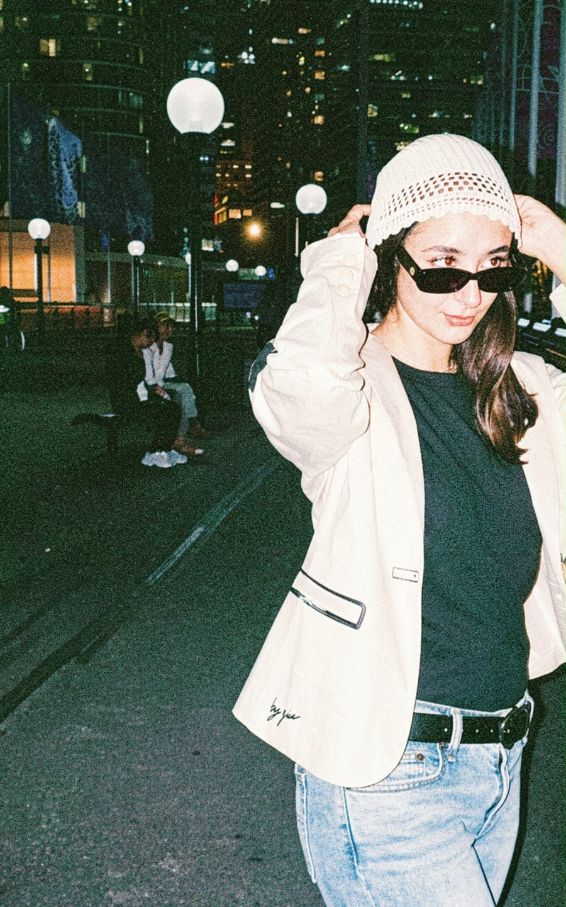

Especialista en el desarrollo integral de colecciones textiles e indumentaria. Mi enfoque une la dirección creativa y el análisis de tendencias con la ejecución técnica: moldería, fichas técnicas, desarrollo de estampas y coordinación de producción.
Con experiencia en marcas de Argentina y Sídney, transformo conceptos creativos en productos viables y funcionales, dominando procesos de impresión digital (DTG, DTF, sublimación) y gestión con talleres externos.


"Diseño conceptual y exploración creativa"

SYD NOIR PROJECT nace como un proyecto personal de experimentación en diseño de indumentaria. Inspirado en la estética urbana de Sídney, explora la relación entre diseño, identidad y producción en pequeñas series.


"Diseño de indumentaria deportiva y trabajo conjunto con producción"
El desarrollo de la colección comienza con la investigación de tendencias, identificando referencias visuales, deportivas y culturales que construyen la dirección creativa de la temporada.


A partir del concepto se desarrolla la moldería y se definen las siluetas, colores y proporciones que darán forma a la colección. Se realiza una muestra con un textil de mismas características para evaluar el calce, comodidad y movimiento.


Desarrollo de estampas aplicadas a distintas líneas de producto, desde el concepto gráfico hasta su materialización en prenda (Estampas Únicas y Estampas Continuas / Rapports).


Trabajo directo en el taller para la confección y supervisión de prototipos. Coordinación de moldería, pruebas de calce y ajustes de costura para las colecciones.


Del desarrollo técnico a la producción de la prenda. Comunicación fluida con talleres externos a través de fichas técnicas de avíos, costuras y tablas de talles para las distintas líneas (Running, Gym, Puffer, Outdoor).


Diseño gráfico aplicado a la producción textil en Sídney. Gestión integral del taller de impresión para realizar producciones de manera rápida y eficiente.
Color, textil, prenda y definición de gráfica.
Archivos, fichas técnicas y preparación.
DTG, DTF, Sublimación y control final.